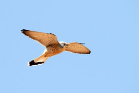
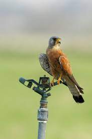
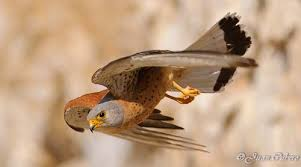
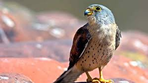
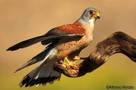

El Cernícalo Primilla
El macho adulto tiene el dorso rojizo, sin manchas.

En vuelo ofrece un aspecto muy pálido, tanto en la cara inferior de las alas como en el cuerpo y la cola; esta es de color gris claro y aparece rematada por una banda terminal negra sobre la que destacan las rectrices centrales, que son más largas.
La hembra luce un tono general bastante más apagado y homogéneo.

El joven es muy similar a la hembra adulta y también a hembras y jóvenes de cernícalo vulgar.
De los segundos se distingue por tener una bigotera poco marcada y ser menos barrado en la parte inferior.
Hábitat y distribución
Estos machos pueden ya llegar a reproducirse y, de hecho, es frecuente que lo hagan, en esa primavera de su primer año calendario, aunque a veces con cierto mayor retraso respecto a los restantes ejemplares adultos de la colonia en que viven.

Costumbres y alimentación
Aprovecha cortados rocosos para instalar sus nidos, o taludes del propio río, ubicándolos en cuevas o repisas cubiertas, protegidas de las inclemencias del tiempo.

Protección y conservación
Está considerada EN PELIGRO DE EXTINCIÓN.
Han sido especialmente graves en nuestra región los episodios de persecución directa mediante cepos, a veces instalados en el propio nido por colombicultores, o trampas instaladas como medidas de gestión inadecuadas en algunos cotos de caza menor, además de la siembra de venenos, y los disparos, a lo que se añade la desaparición de sus hábitats por urbanizaciones, creación de pistas forestales,
choques con tendidos eléctricos, molestias en zonas de cría, etc.
Debe pues reducirse la mortalidad, y mejorar sus territorios de nidificación y alimentación, así como sus áreas de dispersión, e invernada, entre las que se encuentra Murcia con una gran responsabilidad de conservación de la especie, si queremos seguir contemplando el vuelo de esta inapreciada rapaz.
